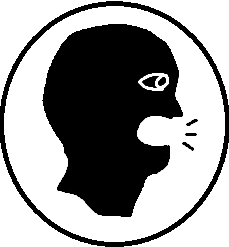

Lead story
Assembly Republicans announce Supermajority
Republicans massively expand a previously razer-thin hold in the Assembly.


Wisconsin
Speaker of Assembly
The latest news from the Wisconsin Legislature.
Lead story
Republicans massively expand a previously razer-thin hold in the Assembly.

Education · October 10, 2026

Politics · October 9, 2026

Local · October 8, 2026
Speaker of Assembly brings you the latest news from Wisconsin's Legislature, Counties, and Municipalities.
18–15 Republican majority